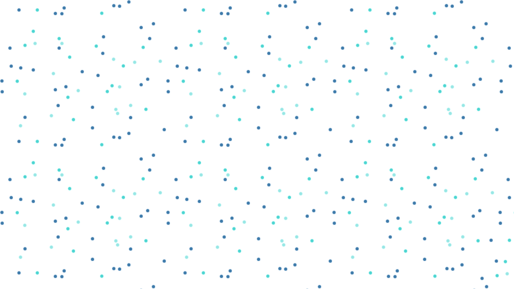

Picturing Us
 Start
Start
Start
Start
Picturing Us is a technology project developed during the pandemic that uses a camera and AI to merge photos of four people into one single photo, giving the impression that they are close together. Through image processing, we convey the message that people can still be together despite physical distancing.
Participants upload their own photos and see them merged into a single image, available for free download.
Overall, this website is a creative and innovative way to showcase a technology project that has the potential to bring people together during a time when physical distance is a necessity. It demonstrates how technology can be used for positive social impact and encourages visitors to imagine new ways to connect and engage with each other in a virtual world.
Picturing Us started during the summer of 2020. When we were all going through lockdown because of Covid-19 and social distancing requirements. To help us deal with the frustration of being quarantined we had a prompt, what sort of art can we create during lockdown that we had not thought about making it before? Usually, at the end of spring, we always had groups of students walking around taking group portraits but this image was gone because of the fear of contamination.
This inspired us to make something that can give us some hope to pass through this period, and taking back the ability to take group photos seemed like a promising solution. We decided to create group portraits of people who are taking photos in the same place but at different times. The result would be collages of people who were close to each other in the image but were temporally distanced during the making process.
This project, the camera is placed in a predefined place, people access a posted link and then are provided with a number that tells them where to stand and pose for a photograph. After taking the photo participants would get a confirmation and later will get a link that provides them with their final photograph which is a collage with other participants. This project is a participatory project as participants would pose individually for a group photo.
Here you can choose the position you like